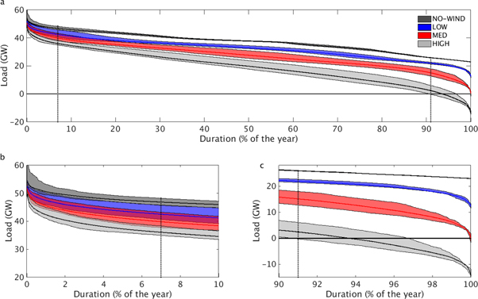

My PhD project (2013-17) investigated the impacts of climate variability and climate change on the Great Britain power system. Since completing this I have been lucky enough to be involved in multiple European energy-meteorology projects thinking about the following topics
- Characterising the variabiltiy of weather-dependent energy systems.
- Creating open datasets and models for demand wind and solar power.
- Identifying the meteorological drivers of extreme energy events
- Quantifying impacts of climate change on power system operation
- Understanding sources of uncertainty in power system modelling: e.g. climate vs decarbonisation pathway
- Sub-seasonal prediction for energy systems.
- The impacts of compound weather events on energy system operation
See the links below for some recent project outcomes, and papers i'm particuarly proud of being involved in. Many datasets are available for download under the datasets tab. I am always keen to talk to people doing work in this area so please do get in touch if anything below is of interest!
Quantifying the increasing sensitivity of power systems to climate variability
Large quantities of weather-dependent renewable energy generation are expected in power systems under climate change mitigation policies, yet little attention has been given to the impact of long term climate variability. By combining state-of-the-art multi-decadal meteorological records with a parsimonious representation of a power system, this study characterises the impact of year-to-year climate variability on multiple aspects of the power system of Great Britain (including coal, gas and nuclear generation), demonstrating why multi-decadal approaches are necessary. All aspects of the example system are impacted by inter-annual climate variability, with the impacts being most pronounced for baseload generation. The impacts of inter-annual climate variability increase in a 2025 wind-power scenario, with a 4-fold increase in the inter-annual range of operating hours for baseload such as nuclear. The impacts on peak load and peaking-plant are comparably small. Less than 10 years of power supply and demand data are shown to be insufficient for providing robust power system planning guidance. This suggests renewable integration studies—widely used in policy, investment and system design—should adopt a more robust approach to climate characterisation.
Load Duration Curves (LDCs) for NO-WIND LOW, MED and HIGH wind-power scenarios (dark grey, blue, red and light grey, respectively). The multi-year mean LDC in each scenario is a solid line, with the edges of the shaded area marking the two extreme years from the set of 36 LDCs within each scenario (1990 and 2010, respectively). Vertical dashed lines show the percentage of time that baseload-plant (91%) and peaking plant (7%) are required to operate. (a) shows the full range of operating durations. (b) and (c) are identical to (a) but highlight only the low- and high-duration parts of the curves respectively.